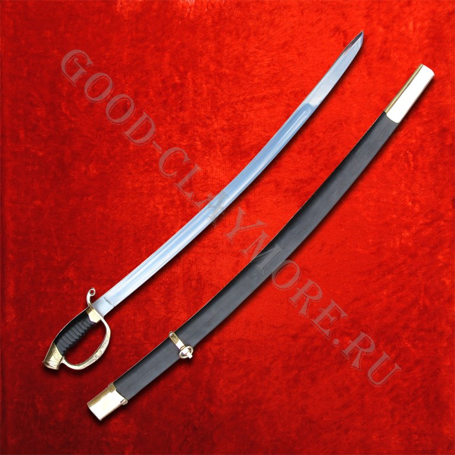
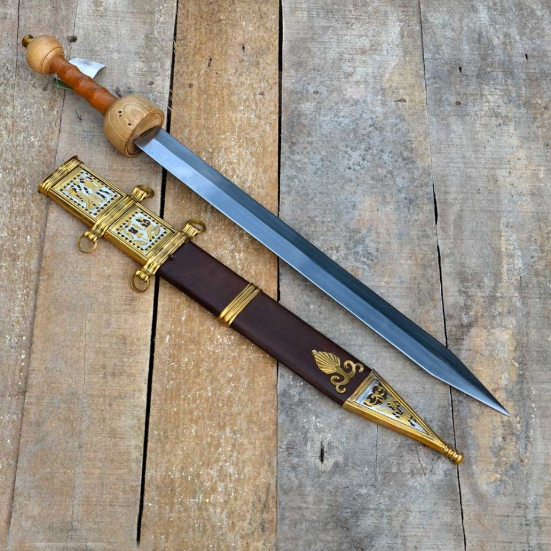

Сабля: оружие, покорившее мир.
История Средних веков неоднородна. Цивилизации, рождавшиеся и расцветавшие в различных регионах нашей планеты, часто различались путями производства оружия. Поэтому для многих из них были характерны свои, знаковые клинки, напрямую ассоциируемые с культурой своих владельцев. Так, рыцарство западной Европы – это меч, прямой клинок с двухсторонней заточкой. А Востоку и Азии ближе по духу оказался клинок изогнутый, с другими свойствами и особенностями – сабля. О ней-то мы сегодня и поговорим.
Сабля – это колюще-рубящее оружие с изогнутым клинком, заточенным, как правило, с одной стороны, по внешней части дуги. В некоторых случаях сабли имели также полуторную заточку, при которой внутренняя часть дуги затачивалась ближе к острию, чтобы обеспечить лучший прокалывающий эффект и некоторые другие особенности фехтования. Руку воина защищает гарда, по смыслу и форме близкая к гарде европейского меча. Как и в случае с западными собратьями, гарда сабли постепенно претерпевала эволюционные изменения, и со временем обрела закрытую защиту кисти в виде дуги или даже корзины, надежно обороняющей руку фехтовальщика. Длина сабли в целом соответствовала обычным габаритам классических мечей Средневековья: клинок около 80 сантиметров, и рукоять около 16 сантиметров, то есть общая длина оружия составляла около метра в длину. Были и более длинные экземпляры на манер полуторных и двуручных мечей, клинок которых достигал 110 сантиметров.

Сабельная форма клинка родилась давно. Ранние изображения этого оружия можно увидеть в Китае, на древних рельефах III века до нашей эры. Впоследствии сабля плотно закрепилась в культуре китайского оружейного дела, превратившись в дао самых различных модификаций, от одноручных, до больших двуручных дадао и багуадао. Отправившись на экспорт, сабли распространились из Китая по территории Корейского полуострова, а за морем, в средневековой Японии, они со временем трансформировались в катану, традиционный меч самурая. Монгольская сабля, почти покорившая континент от моря до моря, тоже, вероятнее всего, является потомком китайского образца, хотя и претерпела серьезные изменения в сторону кривизны и особенностей строения клинка и гарды за время путешествия завоевателей через земли тюркских народов. От кочевых племен сабля пришла и на Русь, где закрепилась в послеордынскую эпоху становления русской государственности. Еще тогда сабля зарекомендовала себя как крайне удобное оружие кавалерии, и именно в коннице она просуществовала вплоть до середины XX столетия.
А вот на арабский Восток, который, казалось бы, плотно ассоциируется с кривыми саблями, это оружие пришло относительно поздно, также вследствие докатившегося до арабов монгольского нашествия. До этого сабли там, конечно, тоже встречались, но широкого распространения не имели, будучи скорее диковинками. Начиная же с XIII века они быстро вытеснили привычные мечи и палаши, став тем самым знаковым оружием арабов, по которому мы узнаем их сейчас...
Читайте полностью на Good Claymore
Гладиус: оружие победы римских легионов
История видела взлеты и падения множества цивилизаций и империй. Но ни одна, пожалуй, не оставила после себя наследия, способного конкурировать с римским. Именно Римская империя – колыбель европейской цивилизации и культуры, достигшая таких вершин быта, государственности и военного дела, до которых пришлось восстанавливаться столетиями после падения Вечного города. И нас, как оружейников, в первую очередь интересует именно военная составляющая римского величия, клинки, острием которых расширялись границы, покорялись племена и побеждались враги Рима. Сегодня мы поговорим о знаменитом гладиусе, мече легионеров.
Гладиус – это короткий меч с длиной клинка в среднем около 60 сантиметров. Прямой и обоюдоострый, гладиус мог использоваться и как рубящее, и как колющее оружие. Рубка, тем не менее, была лишь вспомогательной задачей, в то время как смертельные удары в римском военном деле предполагалось наносить именно колющими ударами тяжелого, широкого клинка. Этим гладиус словно роднится с рапирой эпохи Возрождения, но почему же тогда гладиус не делали длиннее, выигрывая расстояние до противника?

Все дело в том, что гладиус – глубоко римский меч, а сила Рима всегда была в сплоченности, в четкой организации и дисциплине, в единообразии и выучке легионов. В отличие от рапиры или длинного рыцарского меча, гладиус – оружие тесного строевого боя, где с обеих сторон бойца прикрывают плечи товарищей. В строю невозможно фехтовать в полной мере, там важна командная работа, сомкнутость стены щитов, и умение бить, словно один человек, всем строем. Современные реконструкторы, сражающиеся в пеших рыцарских бугуртах, отлично понимают важность строя и то, насколько проще в нем действовать недлинным, простым оружием без особых фехтовальных изысков. Поэтому практически в любой бугуртной команде первый ряд бойцов всегда вооружен щитом и коротким, ухватистым фальшионом с основной задачей «лупить как есть».
В разомкнутом же строю гладиус проигрывал мечам северных варварских племен, с которыми регулярно приходилось сталкиваться легионерам. Кельты и германцы предпочитали рассыпной бой, их клинки обладали большей длиной, и в сражении «один на один» легионеру пришлось бы крайне туго. Военачальники прекрасно это понимали, поэтому строевая подготовка, дисциплина и порядок всегда были на первом месте в легионах. Потерять плечо товарища означало потерять жизнь. Вместе же, ощетинившись короткими жалами гладиусов и закрывшись сплошной стеной щитов, легион представлял собой непробиваемую твердыню, способную принять на себя удар каких угодно героев и мастеров меча, действующих дезорганизовано. Тем не менее, Рим не чурался прогресса, и умел перенимать полезные нововведения, поэтому параллельно с гладиусами для строевого боя в легионах стали появляться и спаты – длинные мечи, в основном использовавшиеся в немногочисленной кавалерии. Постепенно, с закатом Римской империи и увеличением роли варварской кавалерии, спата все больше и больше распространялась по Европе, и со временем стала прародителем того самого рыцарского меча, который всем нам хорошо известен...
Читайте полностью на Good Claymore